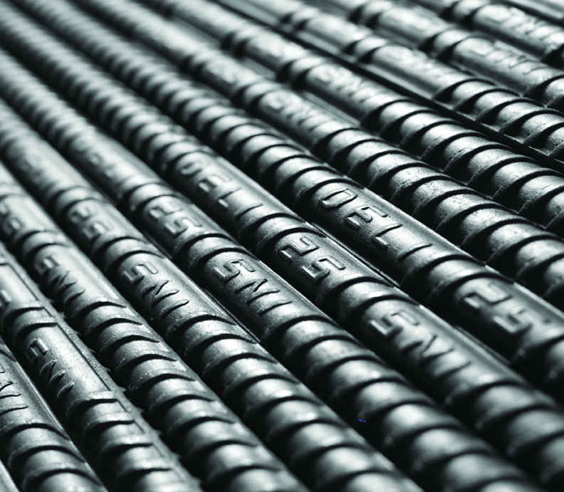

Besi Beton
Mitra Baja Kencana menjual besi beton dengan kualitas terbaik dengan harga terjangkau.
Besi beton adalah material bahan dasar beton struktur yang bisa diaplikasikan pada jalan, bangunan, jembatan, bendungan, terowongan, drainase, tangki, dan sebagainya.
Besi Beton dibuat oleh skrap dan billet.
Skrap adalah besi tua/besi bekas yang telah dilebur.
Billet adalah baja batangan yang merupakan hasil pengecoran bijih besi.
Besi Beton MBK memiliki toleransi ukuran +-0,2 mm dari marking diameter.
Besi yang kami jual sudah memenuhi Standar Nasional Indonesia SNI yaitu SNI 07-2052-2002 BjTP 30, BjTS 40 dan bahkan standar luar negeri juga yaitu:
BS 4449 : 2005 G250/460/500
JIS G3112 : 1991 G295/390
MS 146 : 2000 G250/500
ASTM A615-86 G40/60
AS/NZS 4671 : 2001 G500N/300E/500E
Besi beton dibagi menjadi 2 macam tergantung pada jenis permukaannya:
Besi Beton Polos
Besi beton polos adalah besi yang memiliki penampang bundar dengan permukaan licin atau tidak bersirip. Kami menjual besi beton polos pada diameter 8 sampai 25 mm dengan panjang 6 sampai 18m.
Besi Beton Ulir
Besi beton ulir adalah besi yang memiliki penamapang berbentuk seperti sirip yang ditujukan untuk menambah kekuatan. Kami menjual besi beton polos pada diameter 10 sampai 36 mm dengan panjang 6 sampai 18m.
